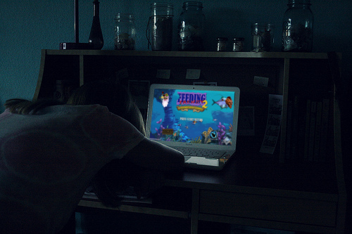

Under no circumstances you should counter-feed or be mean to the person feeding in your game. This is very important since otherwise you will play worse and worse and you become a feeder too! This is not a solution!
To help raising awareness about feeding in DOTA2 you can put the following code on your website:
<span style="background: red; border: 1px solid black;padding: 3px;font-weight: bold;">DOTA2-Feeding-Awareness — We support the <a href="http://stop-feeding.in/dota2" title="Stop Feeding in DOTA2 now!">Stop DOTA2 Feeding Fundation!</a></span>
